Aula 2
Gerenciador de Ambiente Laboratorial (GAL)
O Gerenciador de Ambiente Laboratorial (GAL) foi criado em 2008 com o objetivo de promover o gerenciamento de atividades desenvolvidas pela rede nacional de laboratórios no diagnóstico de doenças de interesse de Saúde Pública. O sistema permite também que os profissionais de saúde solicitem exames laboratoriais para os pacientes atendidos no Sistema Único de Saúde (SUS) diretamente dos postos de saúde. Dessa forma, todo o processo, desde a solicitação até a emissão do laudo, torna-se mais ágil, padronizado e integrado, contribuindo para uma assistência mais eficiente e qualificada.
Esse sistema traz diversos benefícios para a gestão e operação dos laboratórios de Saúde Pública no Brasil. Entre as principais vantagens estão:
Com esses benefícios, o GAL fortalece a capacidade de monitoramento e resposta da rede laboratorial do país, promovendo maior eficiência e qualidade aos serviços de saúde.
O GAL é utilizado em toda a rede estadual e nos laboratórios de referência da Saúde Pública, atendendo a diferentes tipos de laboratórios, cada um com funções específicas dentro do sistema:
Não realizam exames, mas fazem parte da rede, auxiliando na solicitação e encaminhamento de amostras.
Realizam pelo menos um tipo de exame, contribuindo diretamente para a análise laboratorial dentro do sistema de Saúde Pública, como os Laboratórios Municipais, os Laboratórios de Fronteira, entre outros.
Coordenam a rede estadual de laboratórios, incluindo os conveniados, garantindo a padronização e a qualidade dos processos laboratoriais.
São laboratórios que realizam exames de diferentes níveis de complexidade, mas operam fora da rede estadual do solicitante.
Dessa forma, o GAL conecta os diferentes níveis da rede laboratorial, promovendo integração, eficiência e padronização em todo o processo, desde a solicitação de exames até a emissão de laudo contribuindo para uma gestão mais eficaz da Saúde Pública.
A divisão acima apresentada é dada unicamente para entendimento do uso do sistema e não reflete a rede de laboratórios de micologia.
Principais funcionalidades
A primeira funcionalidade que vamos aprender é o cadastro da ficha de requisição, um elemento fundamental para o processo de análise laboratorial. As informações contidas nos itens e seções que compõem a ficha de requisição são muito importantes, sendo algumas obrigatórias. Um conjunto de dados bem preenchido auxilia no raciocínio clínico-laboratorial, na tomada de decisão médica e na vigilância epidemiológica, que, por meio desse cadastro, pode identificar possíveis aumentos de casos em determinadas regiões. Por isso, é fundamental o preenchimento dos campos com atenção.

Saiba mais
Para obter a lista completa e atualizada das doenças de notificação compulsória no Brasil, você pode consultar o site oficial do Ministério da Saúde.
Ao final do cadastro, uma janela com o número da requisição gerada será exibida. Você pode imprimir as etiquetas com o código de barras e/ou a requisição. É bem simples, confira o passo a passo:
Triagem para aprovar, descartar ou encaminhar para rede
Ao receber uma amostra, o laboratório deve confirmar o recebimento ou registrar uma possível não conformidade para o remetente. Essa etapa pode ser feita diretamente na triagem. É importante destacar que a triagem só pode ser realizada para amostras cadastradas há, no máximo, 31 dias.
Utilizaremos o número do GAL para a triagem, porque é o mais comum no dia a dia. Insira o número do GAL no campo "Requisição", selecione "Aprovar" e clique em "Filtrar". Em seguida você será direcionado para a página de "Triagem". Nessa página, observe que aparecerão todos os exames cadastrados para a requisição. Clique na requisição para a qual deseja realizar a triagem e, em seguida, clique em "Aprovar".
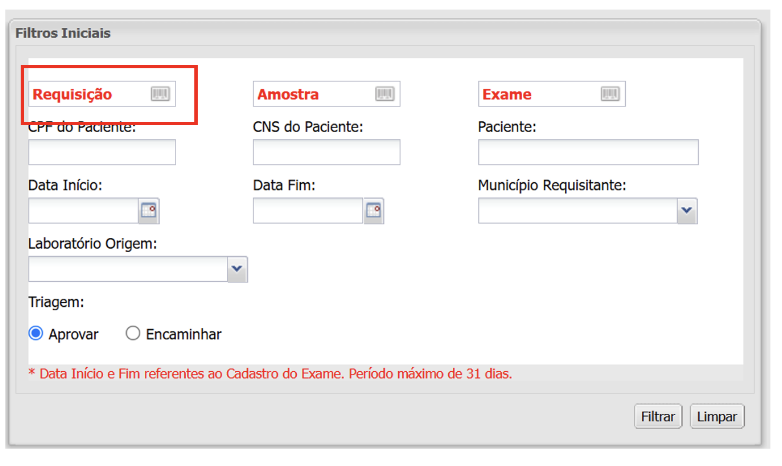
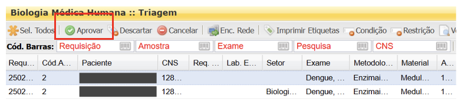
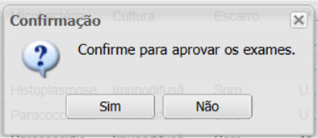
Amostras ou requisições em não conformidade devem ser descartadas no GAL. Para isso, localize e selecione com um clique a requisição na área de triagem, clique no botão "Descartar", selecione o motivo e confirme a ação. Caso necessário, utilize o campo de observação para registrar informações relevantes sobre o descarte.
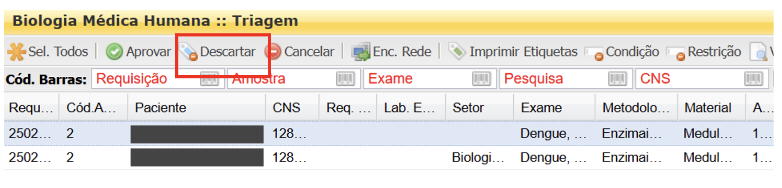
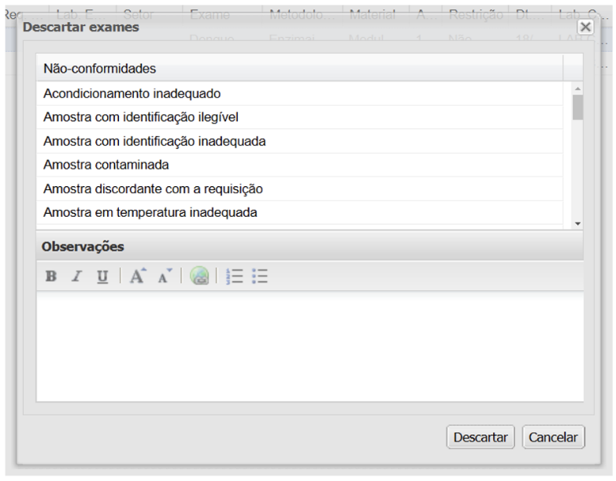
Quando uma amostra precisa ser enviada para outro laboratório, como o de referência nacional, o encaminhamento deve ser realizado após a triagem da requisição. Basta clicar em "Enc Rede" e escolher a forma de encaminhamento:
- Encaminhamento interno: selecione o laboratório de destino.
- Encaminhamento externo: selecione o GAL de destino.
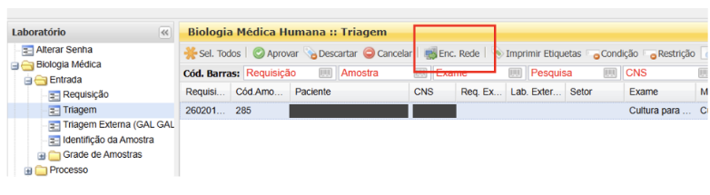
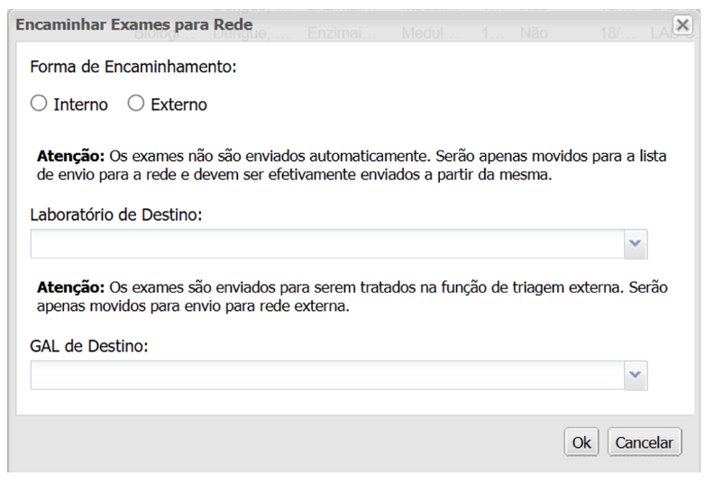
- Finalize clicando em Ok.
Cadastro do resultado do exame
Se o seu laboratório processou a amostra recebida, é hora de informar o resultado. Essa é uma parte muito importante da fase pós-analítica no laboratório. Para isso, basta clicar no sinal de "+" da pasta "Processo".
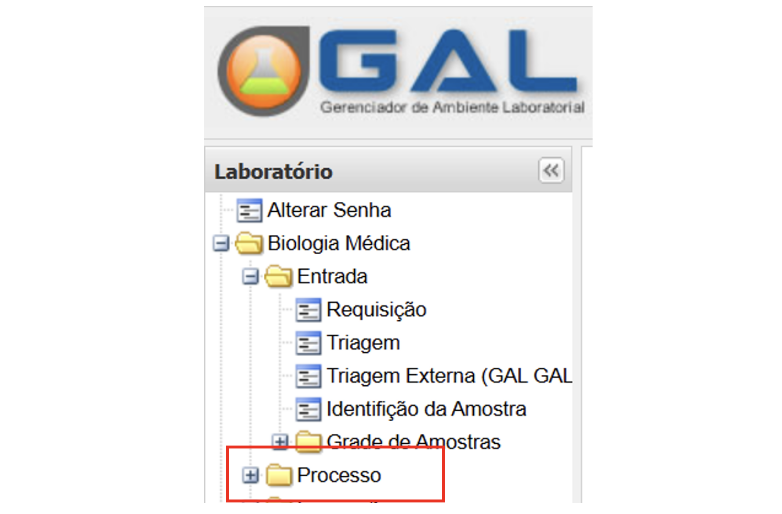
Em seguida, clique na subpasta "Entrada de Resultados" à esquerda da tela. Localize e selecione a requisição do paciente com um clique. Isso pode ser feito inserindo o número do GAL e pressionando a tecla "Enter".
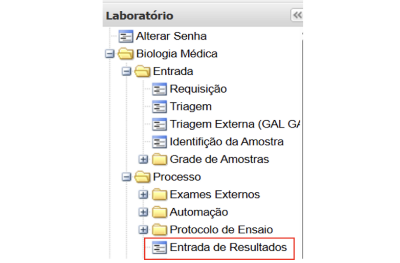
Ao clicar no botão "Registrar Resultado", uma tela será aberta com as informações necessárias para a inserção do resultado. Preencha os campos de acordo com o exame em questão, confira as informações inseridas e finalize clicando no botão "Registrar" logo abaixo.
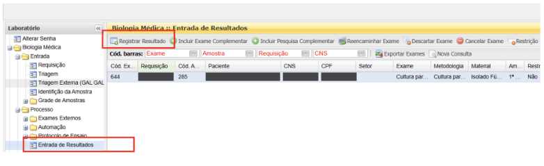
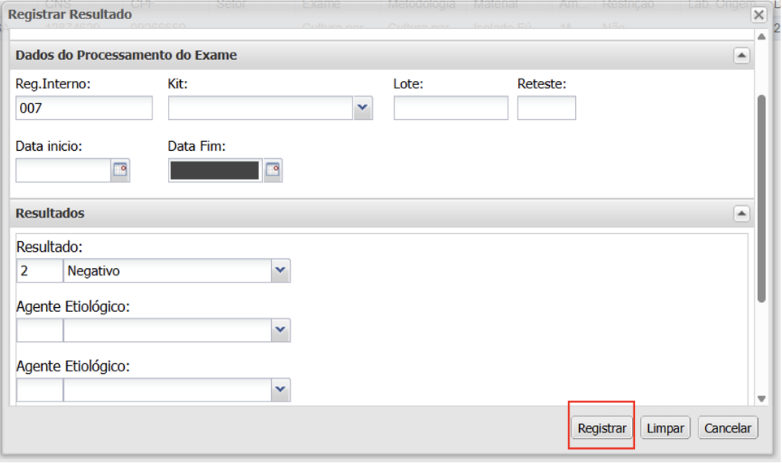
O exame sairá do status "Exame em Análise" (marrom) para "Resultado cadastrado" (verde). Ainda nesse processo, é possível incluir um "exame complementar" selecionando o exame/requisição e, em seguida a opção "incluir exame complementar" no canto superior. Selecione o exame e selecione também amostra.
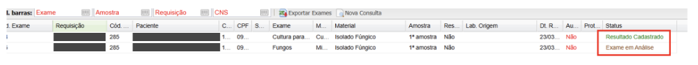
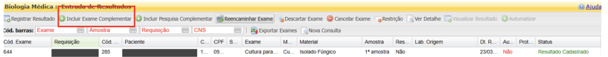
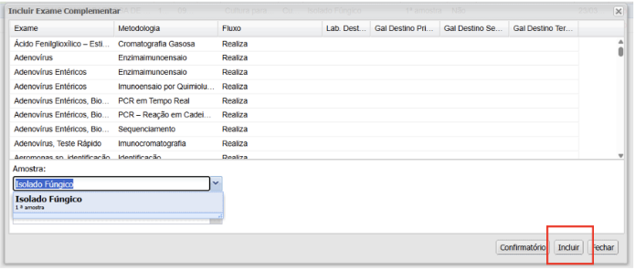
Finalize clicando em "Incluir" para concluir a ação ou "Fechar" para anular.
Também podemos incluir uma pesquisa complementar realizando um processo similar: selecione o exame/requisição e, em seguida, clique em "Incluir Pesquisa Complementar".
Selecione a nova pesquisa e depois a amostra. Clique em "Incluir". Caso seja necessário excluir uma pesquisa, basta selecioná-la e clicar em "Excluir". Para finalizar, clique em "Incluir Pesquisa Complementar" para concluir ou "Fechar" para anular a operação.
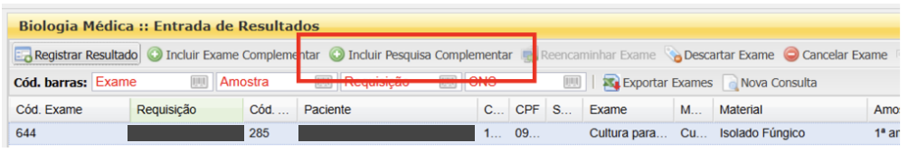
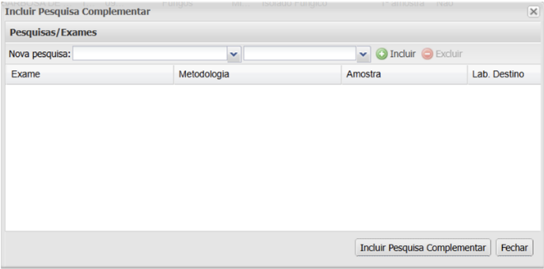
• Opção "Restrição"
A opção "restrição" impede a realização de alguma ação. Ela pode ser utilizada na triagem ou na liberação de um resultado. Por exemplo, pode impedir a liberação de um resultado, até que a condição que impõe a restrição seja removida, como no caso de um laboratório que aguarda o envio de segunda amostra para confirmação de resultado. Para usar essa funcionalidade, basta selecionar o exame/requisição, clicar em "Restrição". Escreva no campo "motivo da restrição" o motivo pelo qual a amostra está em aguardo.
Para finalizar, clique em "Restringir" para concluir ou "Cancelar" para anular a operação. Se, ao tentar liberar um resultado e a amostra estiver com restrição, uma caixa de diálogo com a mensagem "o exame não pode ser liberado, amostra está restrita" será aberta.
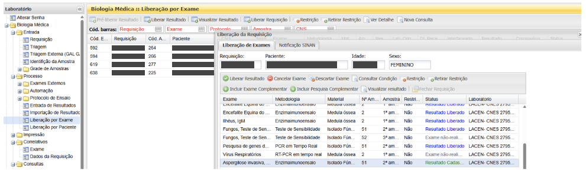
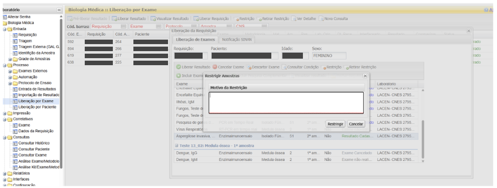
Em "Liberação por exame", localize o número do GAL. Clique na requisição e, em seguida, no botão "Retirar Restrição". Confirme clicando em "Sim".
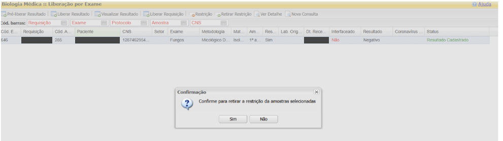
• Opção "Descarte em entrada de resultados"
A função descarte também pode ser utilizada na entrada de resultados, caso necessário. Por exemplo, se a amostra foi insuficiente para a repetição do exame.
Para isso, selecione o exame/requisição que você deseja descartar, clique em "Descartar Exames" — botão localizado na grade superior. Em seguida, selecione o motivo e clique novamente em "Descartar Exames".
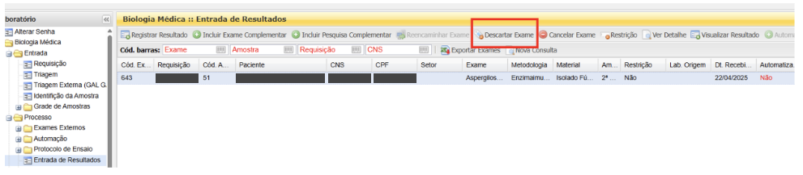
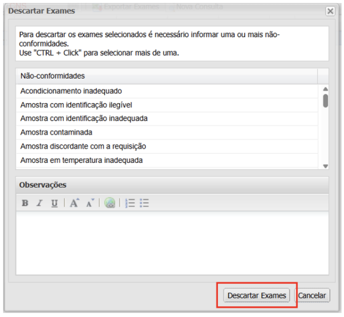
Para "Ver Detalhe" selecione o exame/requisição que você deseja visualizar. Após isso, clique em "Ver Detalhe".
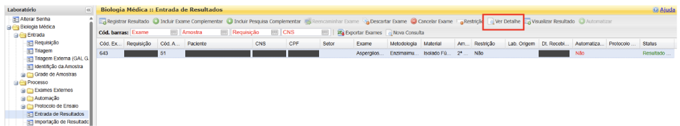
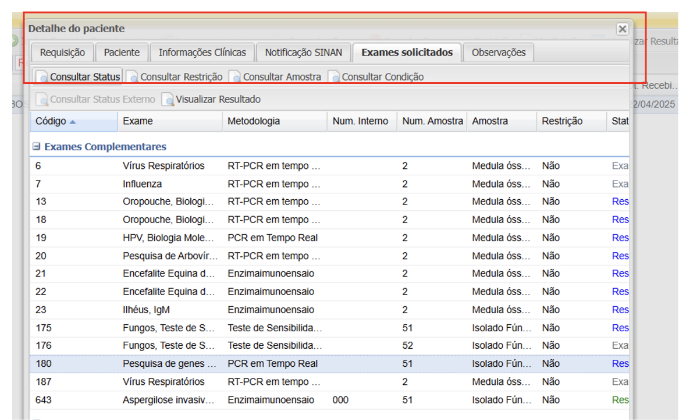
Há várias abas disponíveis para navegação; escolha a desejada e clique nela para abrir. Para sair, clique no símbolo "X". Essa opção também está disponível em "Liberação de Resultado" ou "Liberação por Paciente", que é realizada da mesma forma.
Para liberar o resultado: localize a requisição inserindo o número do GAL ou buscando pelo nome do paciente. Selecione o registro desejado, visualize e confira o resultado. Clique em "Liberar Exame" e, quando a caixa de confirmação aparecer, finalize clicando em "Sim".
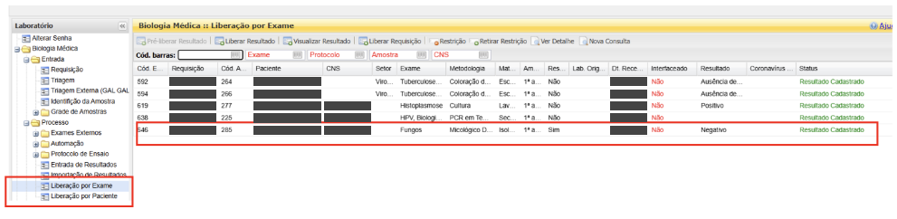
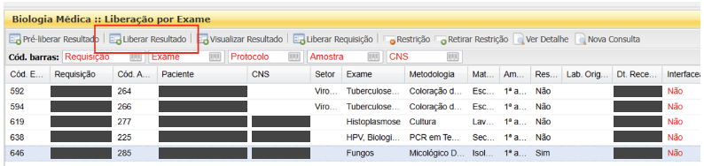
Sugerimos fortemente que, antes de liberar o resultado, você confira os dados inseridos em "Visualizar Resultado". Caso haja alguma informação incorreta, é possível realizar a retificação antes da liberação, acessando "Entrada de Resultado" e refazendo o processo de inserção do resultado conforme já mencionado.
• Opção "Impressão de laudo"
Clique no sinal de "+" da pasta "Impressão" e, em seguida, no sinal de "+" da subpasta "Laudos". Você terá três opções de impressão: parciais, exames liberados, finais.
Recomenda-se que as impressões sejam realizadas por "Exames liberados". Para isso, clique em "Exames liberados".
Em seguida, uma tela de "Filtros Iniciais" surgirá. Observe que há diversos campos disponíveis para a impressão do laudo. Recomenda-se utilizar o número da requisição ou o nome do paciente.
Após inserir os dados mencionados, clique em "Filtrar" e você será redirecionado para outra tela. Nela será possível localizar a requisição desejada. Clique para selecionar e, em seguida, confirme para imprimir os laudos.
Clique em "Sim" para confirmar a impressão dos laudos. Pronto! O laudo será impresso.
• Opção "Correlativo"
O correlativo é destinado à correção de laudos ou de dados da requisição. Para realizar um correlativo de um exame, é necessário que o resultado esteja liberado para que a retificação possa ser visualizada no laudo. Já o correlativo de uma requisição pode ser realizado a qualquer momento.
Clique no sinal de "+" da pasta "Correlativo", em seguida escolha a opção "exame" e insira o número da requisição do GAL.
Clique em "Filtrar", selecione a requisição clicando sobre ela e, em seguida, clique em "Alterar" no canto superior esquerdo. Escreva o motivo da retificação, que será impresso no laudo.
No campo "Controle Interno", sugerimos que você insira as iniciais do profissional responsável pela correção. Essa informação não será impressa no laudo. Clique em "Salvar" para finalizar a ação.
Clique no sinal de "+" da pasta "Correlativo", em seguida escolha a opção "Dados da Requisição". Informe o número do GAL correspondente à requisição.
Clique em "Filtrar. Selecione a requisição clicando sobre ela e, em seguida, clique em "Alterar" no canto superior esquerdo. Retifique o item desejado. Após isso, informe o motivo da correção.
No campo "Controle Interno", sugerimos que você insira as iniciais do profissional responsável pela correção. Finalize clicando em "Salvar".
Consultas
Você pode consultar no GAL pelo histórico, paciente ou exame.
Para acessar o histórico, a tela de "Filtros Iniciais" será aberta com os dados, incluindo o CPF, CNS, paciente, município de nascimento. Insira um desses dados e, em seguida, clique em "Filtrar".
Para consultar por paciente, na tela de "Filtros Iniciais" você pode inserir um desses dados: número da requisição do GAL, CPF, CNS, paciente, município residência. Após inserir, clique em "Filtrar".
Para consultar por exame, insira na tela de "Filtros Iniciais" um desses dados: requisição, amostra, CPF ou CNS, paciente, município residência, requisitante, exame, status, data de início, data de fim. Após isso, clique em "Filtrar".
Geração de Relatórios
Um bom gerenciamento de laboratório depende da análise eficiente de relatórios, que fornecem dados essenciais para monitorar processos, identificar falhas e otimizar a rotina de trabalho. O GAL facilita essa tarefa ao disponibilizar diferentes tipos de relatórios, permitindo uma gestão mais precisa e eficiente.
Existem dois principais tipos de relatórios dentro do sistema GAL: gerais e epidemiológicos. No dia a dia laboratorial, os relatórios gerais são os mais utilizados e serão o foco desta aula. Dentro dessa categoria, há dois subtipos:
• Relatórios auxiliares
Os relatórios auxiliares são aqueles que oferecem suporte para controle de qualidade do laboratório. São eles:
Se o laboratório utiliza algum KIT cadastrado no GAL, é possível gerar esse relatório informando as datas de início e fim nos campos correspondentes, além da unidade requisitante.
Esse relatório será válido apenas se o solicitante informar o campo SINAN ao preencher a ficha do paciente. No entanto, trata-se de um relatório exclusivamente quantitativo, servindo apenas para indicar o número de fichas em que o SINAN foi informado.
É um bom indicador da condição em que as amostras chegam ao seu laboratório. Nessa seção, é possível visualizar quem as está enviando e de que forma estão sendo entregues. As amostras são organizadas conforme as justificativas de descarte na triagem, permitindo identificar quais laboratórios realizaram a entrega de maneira incorreta.
Se o seu laboratório realiza o cadastro de pacientes, essa seção permite acompanhar a produção mensal e verificar quantos cadastros cada funcionário realizou individualmente.
Nessa seção, é possível visualizar a quantidade de pesquisas registradas por mês pelo laboratório.
É possível verificar pendências na bancada, seja na fase de triagem, aguardando análise ou liberação. Essa ferramenta facilita o acompanhamento e a organização do fluxo de trabalho, pois permite a criação de um mapa de trabalho com essas informações.
Esse relatório permite monitorar a produtividade individual dos profissionais em relação aos exames cadastrados no mês.
Você poderá acompanhar tudo o que foi triado e aprovado ao longo do mês, verificando a produtividade de cada funcionário.
• Relatórios gerenciais
Os relatórios gerenciais são voltados para o acompanhamento e a tomada de decisões estratégicas na gestão do laboratório. Eles são específicos para a produção interna do laboratório, apresentando o quantitativo de exames realizados e os resultados obtidos em cada análise. São eles:
Você encontrará um levantamento quantitativo de todos os exames realizados no período. Esse levantamento pode ser realizado por "data de processamento" ou por "data de liberação".
Além do total de exames realizados no mês, é possível visualizar os tipos de resultados liberados nesse período. Também é possível selecionar exames com o mesmo item "pré-tabelado" para exibição.
Você terá as mesmas informações do relatório mensal, mas com foco nos resultados ao longo do período selecionado.
Você poderá acompanhar quais unidades estão enviando solicitações e recebendo os resultados liberados.
Essa é uma seção essencial dos relatórios gerenciais. Aqui, você terá uma visão geral da situação do laboratório. O relatório abrange todo o fluxo de trabalho em tempo real, desde o cadastro e triagem até a análise e liberação dos resultados.
Você será notificado sobre os processos que ultrapassaram o prazo estabelecido pela sua unidade de saúde para liberação. Essa informação deve ser configurada pelo administrador do sistema local na aba de configurações do seu laboratório. Além disso, nesse relatório, ao clicar no botão "exibir exames", você poderá visualizar os exames detalhados em cada etapa do processo dentro do seu laboratório.
Você verá quais laboratórios foram impactados pelos correlativos realizados durante o mês, tanto para as requisições quanto para os exames.
Você verá o motivo específico do correlativo para cada paciente, além de identificar qual profissional realizou o procedimento durante o mês, seja para requisição ou exame.
Esses são os principais relatórios gerados no Sistema GAL, que podem contribuir para a eficiência do seu laboratório. A geração dos relatórios é bastante intuitiva, portanto, não se preocupe.
Saiba mais
Outros manuais de operações podem ser encontrados no GAL.DATASUS.